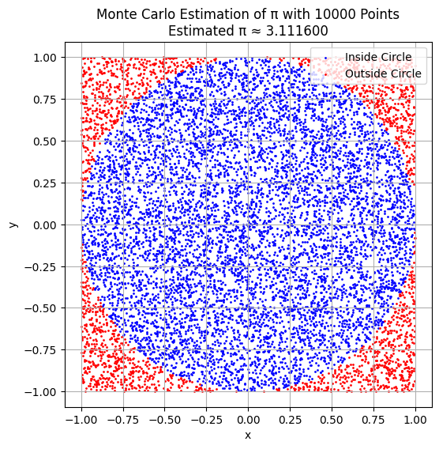

Problem 2
🎲 Estimating π Using Monte Carlo Methods
🎯 Motivation
Monte Carlo simulations are powerful computational techniques that use randomness to solve problems or estimate values. One of the most elegant examples is estimating π using geometric probability.
By randomly generating points and analyzing whether they fall inside a circle, or simulating physical processes like Buffon's Needle, we can estimate π in intuitive and visually engaging ways.
🧠 Part 1: Estimating π Using Random Points in a Circle
🧪 1. Theoretical Foundation
- Consider a unit circle inscribed inside a square of side 2 (centered at the origin).
- The area of the circle is:
\[
A_{\text{circle}} = \pi r^2 = \pi \cdot 1^2 = \pi
\]
- The area of the square is:
\[
A_{\text{square}} = (2r)^2 = 4
\]
- If we randomly generate \( N \) points inside the square, the fraction that fall inside the circle is approximately:
\[
\frac{\text{Points inside circle}}{N} \approx \frac{A_{\text{circle}}}{A_{\text{square}}} = \frac{\pi}{4}
\]
So we estimate:
\[
\pi \approx 4 \cdot \frac{\text{Points inside circle}}{N}
\]
🖥️ 2. Python Simulation
import numpy as np
import matplotlib.pyplot as plt
def estimate_pi_circle(num_points=10000, plot=True):
x = np.random.uniform(-1, 1, num_points)
y = np.random.uniform(-1, 1, num_points)
inside = x**2 + y**2 <= 1
pi_estimate = 4 * np.sum(inside) / num_points
print(f"Estimated π ≈ {pi_estimate:.6f} using {num_points} random points")
if plot:
plt.figure(figsize=(6, 6))
plt.scatter(x[inside], y[inside], s=1, color="green", label="Inside")
plt.scatter(x[~inside], y[~inside], s=1, color="red", label="Outside")
plt.title("Monte Carlo Estimation of π — Circle Method 🎯")
plt.xlabel("x")
plt.ylabel("y")
plt.gca().set_aspect('equal')
plt.grid(True)
plt.legend()
plt.show()
return pi_estimate

📊 3. Visualization (Circle Method)
- ✅ The green dots show points inside the circle.
- ❌ The red dots are outside.
- 📈 As the number of points increases, the estimate of \( \pi \) converges.
📈 4. Analysis (Circle Method)
- Larger samples improve accuracy.
- The convergence is slow, proportional to:
\[
\frac{1}{\sqrt{N}}
\]
🪡 Part 2: Estimating Using Buffon’s Needle
🧪 1. Theoretical Foundation
Buffon’s Needle is a classical probability problem.
- Drop a needle of length \( L \) onto a floor with parallel lines spaced \( d \) apart.
- The probability \( P \) of the needle crossing a line is:
\[
P = \frac{2L}{\pi d} \quad \text{(when } L \leq d \text{)}
\]
Solving for \( \pi \):
\[
\pi \approx \frac{2L \cdot N}{d \cdot C}
\]
Where: - $$N $$: total number of needle drops - $$ C $$: number of crossings
🖥️ 2. Python Simulation
def estimate_pi_buffon(num_drops=10000, L=1.0, d=2.0):
if L > d:
raise ValueError("Needle length must be ≤ line spacing")
crossings = 0
for _ in range(num_drops):
x_center = np.random.uniform(0, d/2)
theta = np.random.uniform(0, np.pi/2)
if x_center <= (L/2) * np.sin(theta):
crossings += 1
if crossings == 0:
print("No crossings. Increase number of drops.")
return None
pi_estimate = (2 * L * num_drops) / (d * crossings)
print(f"Estimated π ≈ {pi_estimate:.6f} using {num_drops} drops")

✅ Conclusion
🎯 In this project, we explored two classic Monte Carlo methods to estimate the value of $$ \pi $$
- 🟢 Circle-Based Monte Carlo Method
- 🪡 Buffon’s Needle Experiment
🔬 Key Takeaways
- Randomness is Powerful: Both simulations use randomness to approximate a deterministic constant, showing how probability and geometry intertwine.
- Circle Method:
- Simple and intuitive
- Faster convergence
- Ideal for computational applications
- Buffon’s Needle:
- Physically inspired
- Slower convergence
- Excellent for teaching experimental probability
📊 Accuracy & Convergence
- Circle method accuracy improves with sample size following:
\[
\text{Error} \propto \frac{1}{\sqrt{N}}
\]
- Buffon’s method converges more slowly due to physical constraints and geometric dependencies.
💡 Final Thoughts
- Monte Carlo methods not only estimate constants like $$ \pi \ $$ but also lay the foundation for solving complex integrals, risk analysis, and stochastic modeling.
- These methods emphasize the beauty of numerical approximation and the power of simulations in modern science and engineering.
📘 Further Exploration
- 🔢 Extend the simulation to 3D shapes (spheres, cylinders).
- ⏱️ Measure execution time to analyze performance.
- 🧠 Use statistical analy